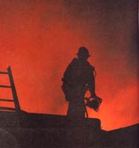
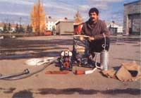
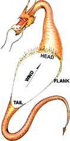
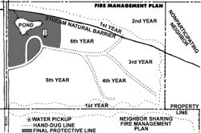

A smokejumper's guide to fighting and preventing, wildfires.
"If there were dragons to slay and fair ladies to save, the same sorts who show up to be smokejumpers would be the knights."
- Old-time smokejumper
My old crony wasn't too far off, because wildfire is a dragon! And smokejumpers are a unique bunch: Gallant, dashing, sometimes a bit grubby (but never tarnished), even sweat-soaked and blackened - they are, in a strange way, noble.
Smokejumpers - some 400 of them in the U.S., 2,660 in the Soviet Union and 50 in Canada - are our best wildfire firefighters, and I'm proud to be one of them. Because they parachute into remote areas, jumpers learn to depend on their wits to make up for a lack of fire trucks, pumpers and assorted gadgets. Common sense, experience, physical conditioning, mental flexibility and straight tactical knowledge make them effective.
I wish I could assure you that the smokejumpers will be around if a wildfire threatens your country home. But the plain truth is that - due to budget cuts, weird government policies or just the sheer proximity of a fire started by, say, your neighbor burning trash - we just might not make it in time. Therefore, one day you may have to face this beast without our help. Read on and let the smokejumpers tell you how to be ready.
A baby dragon needs all three legs of a heat, fuel and oxygen triangle to be born, grow, reproduce and spread. Remove any leg of this triangle, and the dragon will slow down and eventually die. Wildfire fighters often cool a fire (or its fuel) by pouring water on it; we sometimes starve a burn by clearing away fuel in its path; and at times we'll smother a minor blaze by beating it with damp gunnysacks.
Besides the triangle that gives the dragon life, three environmental factors affect its speed and strength: weather, topography and the nature of the fuel.
Weather: This is the most important influence on how a fire will prosper. In fact, weather actually makes the time ripe for a fire to start by warming, drying and fanning the fuel.
Wind is the most obvious element. It drives the fire forward, dries out fuel and can actually carry firebrands beyond the immediate burn causing new fires to develop.
Humidity is also important, especially when lightweight fuels are present. Grass, lichen, moss and small twigs absorb moisture from the air and so may be reluctant to carry the dragon when the air is humid. Conversely, when the air is dry, light fuels almost immediately become tinder. Humidity can be a dominant factor in firefighting tactics.
Temperature is important, but it's a one-way street. That is, the fire danger is usually greater on hot days, but cold may not squelch a ferocious burn. I've fought fires in Alaska in sub-zero temperatures when the humidity and winds were the dominant factors. Likewise, summer isn't the heavy fire season in the eastern U.S. Spring and fall, when winds blow and the humidity is low, bring the greatest number of wildfires.
Sunlight isn't usually mentioned as an important influence on fires, but I've noticed that it has a lot to do with light-fuel dryness in some situations. I've found that when the weather is hot, sometimes only the vegetation in direct sunlight will ignite. Also, in intense sunlight, a cloud passing can change everything.
Topography: The lay of the land has much to do with how a fire will behave. Slope, orientation and elevation are the main influences.
The steeper the slope, the faster the dragon will run uphill. Fuel upslope is heated by radiation and convection, and it's more accessible to the flames than fuel on flat terrain. There's also the chance that the beast will take of downhill as chunks of burning material roll down. Remember, wind isn't the only thing that determines which way a fire will spread. Slope is a major influence on a fire's behavior.
The direction the slope faces (its aspect) determines, in part, how dry the vegetation will be. South- and west-facing slopes are the driest; north-facing, the most moist. This has become especially important as more and more people turn their homes toward the sun for heating. A solar home is almost automatically more vulnerable to fire hazard and requires wise defensive preparation.
High elevation usually means lower fire danger, since it normally offers cooler temperature, later snow melt and more moist vegetation. However, unless you build in an alpine zone, you probably won't be nearly high enough to have your altitude make much difference.
Fuel: Each ecosystem has different vegetation characteristics. The most important of these are moisture content, piece size, amount per acre, proximity of clumps and horizontal and vertical distribution. Even the chemical make-up of the fuel is important. Some woods have pitch, and there may be flammable oils in leaves or needles.
We smokejumpers talk about wildfires as if we were looking down on them from above - a parachutist's-eye view. Fig. 1 shows the dragon's basic anatomy, describing it in a common language that a group of firefighters could use to discuss strategy and report their positions. Let's go into a little more detail about the parts.
Head: This is the main ball of heat, flames and smoke at the front of the fire's advance. It's usually the most difficult part of the fire to deal with. Sometimes a wind change can blow the fire toward the tail or one of the flanks, causing the head to relocate quickly.
Tail: The back of the fire is usually where it started. On occasion, I've seen a fire burn against the wind. This has happened on slopes with strong downhill winds and on perfectly flat ground. We say the fire is backing, and still call the downwind end the tail.
Left and right flanks: The sides of the fire may have active flames, but they're usually less intense than those at the head. When the head is too hot to approach, firefighters often try to attack the flanks. One flank will generally be less smoky than the other and will be easier to work on.
Flame length: The single most important physical aspect of a fire is the height of the flames licking out from the head. Flame length will determine how and where you'll do battle with the dragon. More often than not, you don't try to kill the dragon by cutting off its oxygen or cooling it. You stop it by denying it fuel. To do so, you clear a path all the way around the fire, encircling it with a fuel-free line two to three feet wide. The actual width and depth of the line depend on the types of fuels present. In the West, we dig down all the way to mineral soil with a Pulaski. But in eastern hardwood forest, we only rake aside the leaves with a fire rake and remove the underbrush.
Any fallen trees that bridge the line need to be cut. Use a chain saw to remove a piece that's as wide as the line or twice as long as the tree's diameter, whichever is greater.
Always attack the dragon from anchor points. These are secured zones from which you begin digging line or beating the flames. You may start at the head or tail of the fire and have half the team move around each flank, or you may split the team initially and work from two anchor points - one on each flank at a natural barrier. The important thing here is that the anchor point is secure - a place where the fire can't run around the line and outflank you. Anchor points are vital to success and safety. It also follows from this principle that it takes a minimum of two people to best fight a wildfire.
Different regions of the country demand different firefighting tools, but here's a summary of the necessary pieces of equipment, what each does and about what it costs. Since your minimum team is two people, have at least two rakes and two Pulaskies.
Fire rake: This is different from a traditional garden rake. It has triangular tines that prevent it from plugging up with leaves. Its main purpose is to scrape off leaves or pine needles, and it's used mainly on eastern fires. About $25.
Pulaski. Half ax, half mattock, this is the primary hand tool for digging line in western firefighting. With it, you can chop out brush with the ax side and then dig down to subsoil with the mattock. About $50.
Drip torch: An aluminum can full of a 50:50 mixture of gasoline and diesel fuel, the drip torch is the tool for fighting fire with fire. It lays down a stream of flame and is the best device for burning out large areas. A Fuzee, a standard highway flare, will suffice for small areas.
Backpack water pump: This common five-gallon device - often used for distributing agricultural chemicals - is great for wetting down fuels and for mopping up small hot spots after fighting a fire. About $100.
Chain saw: For woodland fires, you'll need something to section downed trees. I've been fond of my Husqvarna 44 and my Homelite 925, but lately I've really taken to Shindaiwa's 695 - a 4.2-cubic-inch saw with a 28-inch bar. Between $350 and $550.
Motorized pump: If you have any sort of body of water - pool or pond - it's worthwhile to have a pump. You can use it to deliver water directly through hose, or you can fill up a fiberglass holding tank in a pickup and have your own miniature pumper. About $300.
Silv-ex: This foaming chemical increases water's ability to cool and penetrate. Used at the rate of a couple of teaspoons per five gallons, it really boosts the efficiency of a backpack water pump. You can also use it with a motorized pump to do larger areas or even to foam your house. About $100 per five gallons from Wajax-Pacific Fire Equipment, P.O. Box 88540, Seattle, WA 98188, or you can order smaller quantities from me.
You can probably find most of this equipment at a local dealer. If you run into trouble, though, I'm a dealer for most of these items. Write me at Trooper Tom's Fire Protection Company, P.O. Box 44, Manzanita, OR 97130.
If the flame length is short - less than two feet - you can make a direct attack on the dragon's head. When the fire is smoldering, creeping or running along close to the ground, you can usually get up close enough to clear a fuel-free path or actually beat out the flames directly.
When the flames or smoke are a little too intense for you to get close to the head, you can start at the tail and work forward along the flanks. If at all possible, though, go for the dragon's head while it's still vulnerable. Winds could pick up while you're working your way around the flanks, and the head could gain intensity and speed.
If you're unable to go straight for the dragon's head or tail, move out in front of the fire's advance and set up an ambush. In an indirect attack, you dig a line and burn the fuel before the fire arrives. There's no substitute for experience in determining just how far ahead to set the ambush. Lacking that, be sure to err on the side of safety. Move out far enough to give yourself plenty of time to burn out the line and still keep your people out of the dragon's reach.
Dig a line one to three feet wide, depending on the flammability of the fuel and the size of the crew, moving from the head around the flanks. As you go, have the last person in the team burn out on the inside of the line, closest to the fire. The intentional burn will consume the fuel between the fire and the line, halting the dragon's advance.
Know your land and use natural barriers to help you make a stand. Roads, streams, ponds, trails and other natural features are great places to stop the dragon in its tracks. Even a meadow is preferable to a heavily wooded area, because it will be easier for the crew to clear the lighter fuels from the fire's path. In this area, at least, a homeowner can have an advantage over a professional smokejumper. The jumper may have the ability to compute flame length, travel time, manpower and fuel types to estimate what the fire might do. But the homeowner knows where the natural barriers are without having to reconnoiter.
Flame lengths greater than about eight feet are considered uncontrollable. Also, if there are ladder fuels lifting low flames up into trees or if there are firebrands being carried past you by the wind and starting spot fires, you're in over your head and are in danger. Back off! There are few jobs more dangerous than fighting out-of-control wildfires. Respect the dragon; it's better to retreat and have a chance to fight again another day.
According to the National Fire Protection Association, there were 83,000 wildfires in 1985, and they burned roughly 3 million acres. Those fires destroyed 1,400 structures and killed 44 people. Sadly, proper planning could have prevented most of the devastation. The following plan will help you stop a dragon before it ever gets started.
Start your dragon-proofing by securing your home against fires that start in it or nearby. The prime breeding ground for large reptiles in your home is the woodstove. Installation standards are readily available, and you should observe them. There do seem to be a few areas where people often foul up, though. Heat shields for walls should have a one-inch air space behind them. Without air space, they don't shield much.
Stovepipe can also be confusing. Once you make a wall or ceiling pass with insulated pipe, stick with it. If you revert to the singlewall material, you'll have creosote condensation problems. A lot of people are using stainless steel stovepipe now, rather than the cheaper black steel or galvanized stuff. It lasts much longer and won't surprise you by burning through.
Be sure you have working smoke detectors installed at the locations recommended on the packages. A combination ionization-photoelectric detector gives the best all-around protection from all sorts of fires.
Check your electrical panel boxes twice a year. Be sure that all the wires are tight and that the connections to breakers and the ground and neutral bars are coated with a light layer of grease. Looseness and corrosion will cause arcing, sparks and perhaps a fire. If you have an appliance that keeps throwing a breaker or lights that dim at times, make sure that the circuits are correctly designed and that everything's right in the panel.
Locate an ABC fire extinguisher in a prominent place, and make sure that all your family members know how to use it. (Proper use of a fire extinguisher is not obvious.) In the winter, keep any firefighting water pumps filled and in heated spaces, so they won't be frozen up when you need them. This may be vital when outside faucets are inoperable. And remember, wildfires do occur in winter.
Keep fire department and forest service phone numbers posted near (or on) your telephones.
The roof is the most vulnerable part of a rural home. And pretty as they are, shake roofs are the worst. In fact, I don't see why any insurance company would underwrite a shake-roofed house in a fire zone.
Make sure that all electric service lines are clear of vegetation. Tree limbs rubbing on wires in the wind continue to cause an amazing number of fires every year.
Display your house number clearly at your driveway entrance, especially if your house is out of sight from the road. This will help firefighters find you quickly in an emergency. Then make sure that your driveway and roads are wide enough for large firefighting vehicles to reach your home and outbuildings. Vehicles should be able to pass, and there should be places to turn around.
To be ready for the dragon in the woods, you need to carefully map your property and plan a firefighting strategy. This will settle your thoughts, and it will help professional firefighters in the area do their jobs.
Topographical maps probably won't provide enough detail, so you'll need to work from either a surveyor's plat or an aerial photo. Your county courthouse may have one or both. Another source for aerial photos is W.A.C. Corporation, 520 Conger St., Eugene, OR 97402; 800/845-8088 or 503/ 342-5169. When you call them, have a legal description of your land ready (again, from the courthouse) and ask for a 1 "- to - 200' scale photo. (A 1" - to - 400' photo will do, if that's all they have.)
From the photo or plat, make an overlay map using tracing paper, and ink in compass directions and magnetic declination. Use the map and photo to explore your property in your imagination, and then take off on foot with map, compass and engineer's tape to look closely. Match the features on the facsimiles to what you see. Become very familiar with both the real and depicted worlds.
When you understand the lay of your land, it's time to think like a dragon-slaying warrior. Your last line of defense should come first. Vegetation within 100 feet of your house should be sparse and well spread out. If not, clear it. Be particularly concerned about the 100 feet that's between your home and the prevailing wind direction.
If your home is on a slope, the ground below should be cleared even farther - on steep slopes at least 200 feet, and preferably 300 feet, out. Ornamental trees that are well separated and clear of low branches are OK.
Now circle your house just beyond the 100 foot (or greater) perimeter with a cleared line that ties into roads and natural barriers. The line can be a quaint trail so it won't disturb the landscaping. This will be your last defense should the dragon appear unstoppable. You burn out from it before the wildfire arrives, to create a black area the flames can't cross. Flag the line with pieces of engineer's tape so it will be obvious to anyone in an emergency, and pencil in the line on your map.
Next, exploit existing barriers farther out on your property. Maintain roads both for firebreaks and also for access to remote areas. Cut back the canopy over streams so fire can't bridge them.
If existing fire control lines don't provide an adequate distant perimeter to defend, plan to make your own. Follow your property lines, marking a pleasantly meandering trail that averages about 10 feet from the boundaries. Pencil this in on your map as you go.
Then approach your neighbors, explain what you're doing and see if you can convince them to do the same. With cooperation, you can each take on a portion of the work of creating and maintaining a sort of no-man's land. You'll each dig a line along your boundary trail and clear the forest floor of underbrush to the boundary.
WILDFIRE
Your last defense will be a burned-back line that the fire can't cross.
Trees in the no-man's land should be pruned to leave open space between crowns and to remove branches for 15 feet up the trunks. Leave nothing that might serve as a fire ladder to the crowns. Clear away shrubs and brush, and let grass grow. This isn't a bulldozed, barren strip; it's more like a park that can be burned off to create a 20-foot-wide black line to stop the dragon. If you're unable to get cooperation from neighbors, you'll have to dig two lines on your own side of the boundary and maintain the whole noman's land.
Include on your map a plan for thinning all the woodlands on your property. You don't have to do the work all at once; you can set dates to do different sections. Then carry the map to the state forestry people, and explain what you're doing. Tell them you want your first five or six acres of thinning to act as a planned fire control line as well as a tree crop area.
Once you've got forester's approval, submit your entire management plan to the local fire chief and ask for suggestions and some sort of endorsement. When you send copies of all this to your homeowner's insurance company, you should get a substantial reduction in rate. If not, maybe it's time to look for a new insurance company.
Editor's Note: Trooper Tom's complete wildfire fighting manual, From Dragon Slayers, is now available. The roughly 60 page book discusses tools, tactics and regional firefighting techniques in much more detail than is possible here. You can order a copy by sending $10 to Mother's Plans, Dragon Slayers, P.O. Box 70, Hendersonville, NC 28793.
Trooper Tom spends his summers as a smokejumper with the Bureau of Land Management at Fort Wainwright, Alaska. He winters in Oregon building houses and ponds. Troop's other publications include an article and a book on log building, both of which were published by MOTHER EARTH NEWS.
|
 A smokejumper is the only pro when it comes to fighting wildfires. Yet you may someday be forced to do the job on your own. |
 Troop displays basic home and property protection gear. |
 FIG. 1. The Dragon's Anatomy |
|
 |
|
|